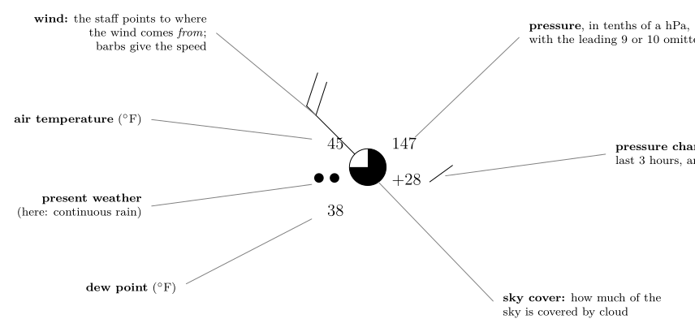
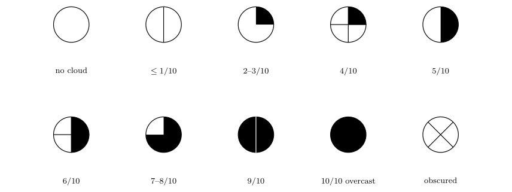
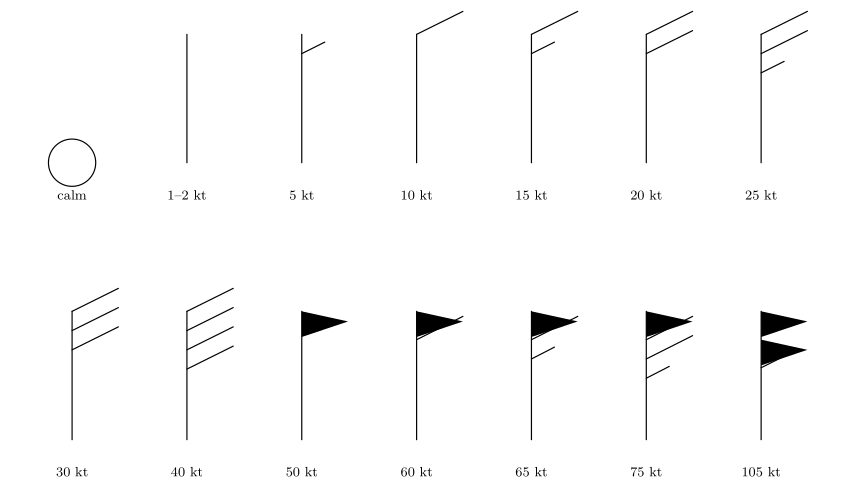
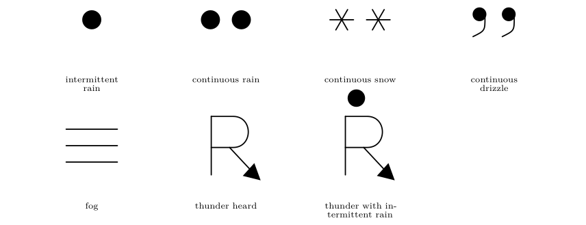
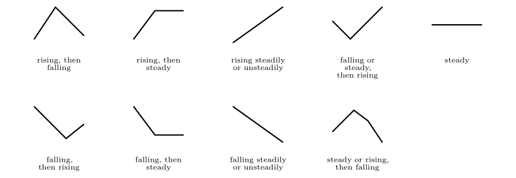
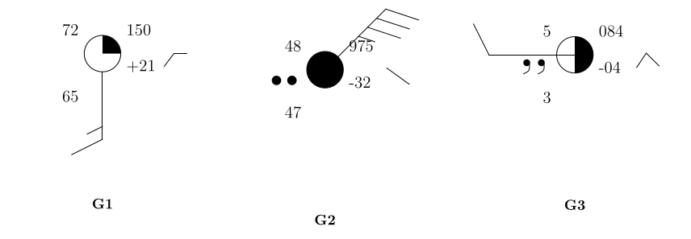

27. Reading a station model¶
This chapter answers Map Q12.
27.1 Why a station model?¶
About 10 000 weather stations around the world measure as many as 18 quantities at each observation: temperature, dew point, pressure, wind, cloud, weather, and more. To show all that on one map the World Meteorological Organization (WMO) fixed a compact way of drawing an observation, the station model. Every number and symbol has a fixed position around a small circle that marks the station. Once you know the positions, a map becomes a table you can read at a glance.
27.2 The anatomy of a station model¶

Figure 27.1. A station model with every field labelled. This example reads: temperature 45 \(^{\circ}\mathrm{F}\), dew point 38 \(^{\circ}\mathrm{F}\), pressure 1014.7 hPa, rising by 2.8 hPa in the last three hours, three-quarters of the sky covered, continuous rain, and a wind of 20 knots from the north-west.
| Position | What it shows |
|---|---|
| Top left | air temperature, in \(^{\circ}\mathrm{F}\) here |
| Bottom left | dew-point temperature |
| Top right | pressure: three digits (tenths of a hectopascal) |
| Right, below the pressure | pressure change over the last 3 hours (with a symbol for its pattern) |
| Left of the circle | present weather symbol |
| The circle itself | sky cover (how much is filled) |
| A line from the circle | wind: the staff points from where the wind blows, barbs give the speed |
: Where each quantity sits around the circle.
27.3 Decoding the pressure¶
Only three digits are plotted, in tenths of a hectopascal, and the leading digits are left off. Sea-level pressure almost always lies between about 950 and 1050 hPa, so the missing digits can be restored without doubt.
The pressure rule
-
Put a decimal point before the last digit: \(117\to11.7\).
-
If the three-digit number is less than 500, put 10 in front: \(11.7\to1011.7\) hPa.
-
If it is 500 or more, put 9 in front: \(998\to99.8\to999.8\) hPa.
| Code | Decimal point | \(<500\) or \(\ge500\)? | Prefix | Pressure |
|---|---|---|---|---|
| 024 | 02.4 | \(<500\) | 10 | 1002.4 hPa |
| 998 | 99.8 | \(\ge500\) | 9 | 999.8 hPa |
| 117 | 11.7 | \(<500\) | 10 | 1011.7 hPa |
| 997 | 99.7 | \(\ge500\) | 9 | 999.7 hPa |
| 147 | 14.7 | \(<500\) | 10 | 1014.7 hPa |
: Examples of the pressure rule (the first four are the models of Question 12).
27.4 Temperature and dew point¶
Both are in degrees Fahrenheit here. To convert to Celsius, subtract 32 and multiply by 5/9:
where
| \(T(\ensuremath{^{\circ}\mathrm{C}}),\ T(\ensuremath{^{\circ}\mathrm{F}})\) | the same temperature in Celsius and in Fahrenheit | \(^{\circ}\mathrm{F}\) from the station model |
So 37 \(^{\circ}\mathrm{F}\) is 2.8 \(^{\circ}\mathrm{C}\), 63 \(^{\circ}\mathrm{F}\) is 17.2 \(^{\circ}\mathrm{C}\), and 21 \(^{\circ}\mathrm{F}\) is \(-6.1\) \(^{\circ}\mathrm{C}\).
The dew point is the water-vapour measure of Chapter 22, and the gap between the two, \(T-T_d\), tells you how close the air is to saturation. A gap of 3 \(^{\circ}\mathrm{F}\) means nearly saturated air (fog, rain or thick cloud likely); a gap of 20 \(^{\circ}\mathrm{F}\) means dry air. You can turn the pair into a relative humidity with the formula \(\mathrm{RH}=100\,e_s(T_d)/e_s(T)\).
27.5 Sky cover¶
The circle is filled in proportion to the cloud cover. Here it is in tenths. The shading grows clockwise from the top, as in Figure 27.2.

Figure 27.2. The sky-cover symbols: from clear (empty) through half (right half filled) to overcast (filled), and an obscured sky (a cross). The “9/10” symbol is filled with a vertical gap: overcast with small openings.
27.6 Wind: the barbs¶
The wind is drawn as a straight line, the staff, that starts at the circle and points towards the direction the wind comes from, as a weather vane does. At the free end are short lines, the barbs, that tell you the speed in knots.
-
a half barb: 5 knots;
-
a full barb: 10 knots;
-
a pennant (a filled triangle): 50 knots;
-
no barb but a staff: 1 to 2 knots; a circle round the station and no staff: calm.

Wind barbs for the Northern Hemisphere, drawn with the staff pointing up (a north wind) and the barbs on the right. Add the barbs: 10 + 10 + 5 = 25 knots.
To read a barb.
-
Find the staff and follow it from the circle to its free end. The wind comes from that direction: a staff pointing to the lower left is a wind from the south-west.
-
Count the barbs at the free end: pennants (50), full barbs (10), half barbs (5). Add them.
-
Convert if you wish: 1 knot \(=0.514\ \ensuremath{\mathrm{m\,s^{-1}}}\), so 25 knots \(=12.9\ \ensuremath{\mathrm{m\,s^{-1}}}\).
A question that comes up
The staff points where the wind comes from, but the air is moving the other way. Which way do I draw a streamline?\ Away from the barbs, i.e. in the direction opposite to the staff. A staff pointing to the south-west means the air is heading north-east. Keep that in mind in Chapter 28.
27.7 Present weather and pressure tendency¶

The present-weather symbols used here.

The barometric tendency symbols: how the pressure has changed in the last three hours. A line rising to the right means rising pressure, one falling to the right means falling pressure.
The number next to the symbol, for example \(+17\) or \(-11\), is the pressure change in tenths of a hectopascal: \(+17\) is a rise of 1.7 hPa in three hours, \(-11\) a fall of 1.1 hPa. Rapid falls often warn of a storm approaching; rising pressure usually brings improving weather.
27.8 Question 12: the four station models¶
The question
Decode the information from each of the following station models.
Method. For each model work down this list: pressure; temperature; dew point; sky cover; and, where shown, current weather, wind speed, wind direction, pressure change and tendency.
Model 1¶
Model 1
Pressure: 024 \(\to\) 02.4 \(\to\) 1002.4 hPa\ Temperature: 37 \(^{\circ}\mathrm{F}\) (2.8 \(^{\circ}\mathrm{C}\))Dew point: 21 \(^{\circ}\mathrm{F}\) (\(-6.1\) \(^{\circ}\mathrm{C}\))\ Sky cover: empty circle: 0 % (clear). No staff, only a ring round the circle: calm. RH \(\approx52\,\%\).
Model 2¶
Model 2
Pressure: 998 \(\to\) 99.8 \(\to\) 999.8 hPa\ Temperature: 63 \(^{\circ}\mathrm{F}\) (17.2 \(^{\circ}\mathrm{C}\))Dew point: 60 \(^{\circ}\mathrm{F}\) (15.6 \(^{\circ}\mathrm{C}\))\ Current weather: thunder with intermittent rain. Sky half filled (5/10); no staff: calm. RH \(\approx90\,\%\).
Model 3¶
Model 3
Pressure: 117 \(\to\) 11.7 \(\to\) 1011.7 hPa\ Temperature: 43 \(^{\circ}\mathrm{F}\) (6.1 \(^{\circ}\mathrm{C}\))Dew point: 20 \(^{\circ}\mathrm{F}\) (\(-6.7\) \(^{\circ}\mathrm{C}\))Sky cover: empty circle, 0 %\ Wind: staff to the lower left: from the south-west; two full barbs and a half barb: 25 knots\ Pressure change: \(+17\): \(+1.7\) mb, rising
Model 4¶
Model 4
Pressure: 997 \(\to\) 99.7 \(\to\) 999.7 mb\ Temperature: 27 \(^{\circ}\mathrm{F}\) (\(-2.8\) \(^{\circ}\mathrm{C}\))Dew point: 20 \(^{\circ}\mathrm{F}\) (\(-6.7\) \(^{\circ}\mathrm{C}\))\ Sky cover: filled circle, 100 %Current weather: continuous snow\ Wind: staff to the upper left: from the north-west, 25 knots\ Pressure change: \(-11\): \(-1.1\) mb, falling
| Model 1 | Model 2 | Model 3 | Model 4 | |
|---|---|---|---|---|
| Barometric pressure (mb) | 1002.4 | 999.8 | 1011.7 | 999.7 |
| Temperature (\(^{\circ}\mathrm{F}\)) | 37 | 63 | 43 | 27 |
| Dew point (\(^{\circ}\mathrm{F}\)) | 21 | 60 | 20 | 20 |
| Sky coverage (%) | 0 | 50 | 0 | 100 |
| Current weather | — | thunder, interm. rain | — | continuous snow |
| Wind speed (knots) | calm | calm | 25 | 25 |
| Wind direction (from) | — | — | south-west | north-west |
| Pressure change in 3 h (mb) | — | — | \(+1.7\) | \(-1.1\) |
| Tendency | — | — | rising | falling |
: All four models decoded.
27.9 What the models tell you¶
Putting the numbers together gives each station a story.
-
Model 1: cold, dry (the dew point is 16 \(^{\circ}\mathrm{F}\) below the temperature), clear and calm: a cold, high-pressure night.
-
Model 2: warm and very humid (the dew point only 3 \(^{\circ}\mathrm{F}\) below the temperature), with thunder and rain: unstable, thundery air.
-
Model 3: clear and windy with rising pressure: air moving away from a low towards a high, after a front has passed.
-
Model 4: overcast, snowing, 27 \(^{\circ}\mathrm{F}\), wind 25 knots and falling pressure: a depression is arriving or overhead.
27.10 Try it yourself: Practice Set 27¶
Decode each of the three models in Figure 27.6 (pressure, temperature and dew point in \(^{\circ}\mathrm{F}\) and \(^{\circ}\mathrm{C}\), relative humidity, sky cover, weather, wind speed and direction, pressure change and tendency), then check against the answers below.

Figure 27.6. Three station models to decode.
Answers to Practice Set 27
-
150 \(\to\) 15.0 \(\to\) 1015.0 hPa. \(T=72\) \(^{\circ}\mathrm{F}\) (22.2 \(^{\circ}\mathrm{C}\)), \(T_d=65\) \(^{\circ}\mathrm{F}\) (18.3 \(^{\circ}\mathrm{C}\)), RH \(\approx79\,\%\). Sky: 2–3/10 (about 25 %). Wind: staff pointing straight down: from the south, one full barb and a half barb: 15 knots. Tendency: \(+21\) \(\to\) up 2.1 hPa, rising then steady. No weather symbol: fair, warm and humid.
-
975 (\(\ge500\)) \(\to\) 97.5 \(\to\) 997.5 hPa. \(T=48\) \(^{\circ}\mathrm{F}\) (8.9 \(^{\circ}\mathrm{C}\)), \(T_d=47\) \(^{\circ}\mathrm{F}\) (8.3 \(^{\circ}\mathrm{C}\)); RH \(\approx96\,\%\). Overcast (100 %). Continuous rain. Wind from the north-east, three full barbs and a half barb: 35 knots. Pressure \(-32\): down 3.2 hPa, falling steadily.
-
084 (\(<500\)) \(\to\) 08.4 \(\to\) 1008.4 hPa. \(T=5\) \(^{\circ}\mathrm{F}\) (\(-15\) \(^{\circ}\mathrm{C}\)), \(T_d=3\) \(^{\circ}\mathrm{F}\); RH \(\approx91\,\%\). Sky: 6/10. Continuous drizzle. Wind from the west, one full barb: 10 knots. Pressure \(-4\): down 0.4 hPa, rising then falling.
27.11 Station models in Python¶
These functions compute the equations of this chapter, and the book’s tests check them against its answers.
def fahrenheit_to_celsius(t_f):
"""Temperature in deg C from deg F."""
return (t_f - 32.0) * 5.0 / 9.0
def decode_pressure(code):
"""Sea-level pressure (hPa) from a three-digit station-model code."""
return (1000.0 if code < 500 else 900.0) + code / 10.0
def knots_to_ms(knots):
"""Wind speed in m/s from knots."""
return 0.514 * knots
decode_pressure(247) returns 1024.7 and decode_pressure(987) returns 998.7.